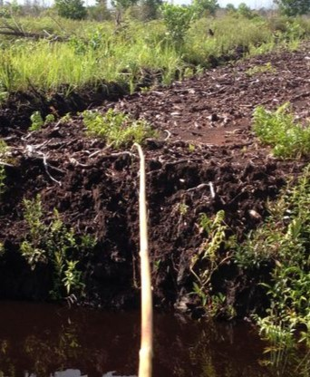

Jelajahi hubungan makhluk hidup, rantai makanan, keseimbangan ekosistem, peran manusia, dan siklus air melalui lingkungan lahan basah Kalimantan Selatan.
🎯 Tujuan belajar: Kamu dapat menjelaskan ekosistem dan membedakan makhluk hidup dengan benda alam tak hidup.
Ekosistem adalah sistem hubungan antara makhluk hidup dan benda alam tak hidup di suatu tempat. Rawa, sungai, gambut, dan mangrove disebut ekosistem karena ikan, tumbuhan, burung, manusia, air, tanah, udara, dan cahaya saling memengaruhi.
🌿
Komponen biotik
Semua makhluk hidup, misalnya ikan gabus, bangau, purun, jamur, bakteri, dan manusia.
☀️
Komponen abiotik
Benda alam tak hidup, misalnya air, tanah, lumpur, udara, cahaya, suhu, dan mineral.
🧠 Cek cepat:
Manakah kelompok yang seluruhnya merupakan komponen abiotik?
2
Bab 3 · Komponen
Individu, Populasi, Komunitas, dan Habitat
Kenali tingkat kehidupan dalam ekosistem.
🎯 Tujuan belajar: Kamu dapat mengelompokkan makhluk hidup dan menjelaskan habitatnya.
🐟 Individu
Satu makhluk hidup, misalnya seekor ikan seluang.
🐟🐟 Populasi
Sekumpulan makhluk hidup sejenis, misalnya populasi ikan seluang.
🌿🐟🐦 Komunitas
Berbagai populasi yang hidup bersama dan berinteraksi.
🏞️ Habitat
Tempat hidup yang menyediakan makanan, air, perlindungan, dan ruang berkembang biak.
Contoh habitat lahan basah Kalimantan Selatan
Rawa
Purun, teratai, katak, ikan, air tawar, dan lumpur.

Gambut
Pohon rawa, jamur, serangga, tanah organik, dan air.
Mangrove
Bakau, kepiting, udang, burung, air payau, dan lumpur.
3
Bab 3 · Interaksi
Setiap Komponen Saling Bergantung
Perubahan kecil dapat menimbulkan dampak berantai.
🎯 Tujuan belajar: Kamu dapat menjelaskan hubungan komponen biotik dan abiotik melalui sebab-akibat.
Tumbuhan memerlukan air, cahaya, udara, tanah, dan mineral. Ikan memerlukan air yang sesuai dan makanan. Bangau memerlukan perairan dangkal serta ikan atau hewan kecil. Dekomposer memerlukan sisa makhluk hidup untuk diuraikan.
Permainan “Andaikan...”
Pilih satu keadaan.
Telusuri sedikitnya tiga komponen yang terkena dampak.
4
Bab 3 · Energi
Rantai dan Jaring-Jaring Makanan
Energi berpindah melalui proses makan dan dimakan.
🎯 Tujuan belajar: Kamu dapat menentukan produsen, konsumen, dekomposer, serta membaca arah panah.
🌱
FitoplanktonProdusen
→
🔬
ZooplanktonKonsumen I
→
🐟
Ikan SeluangKonsumen II
→
🐦
BangauPemangsa
→
🍄
Jamur & BakteriDekomposer
Ingat: panah menunjukkan perpindahan energi dari makanan menuju pemakannya. Beberapa rantai yang terhubung membentuk jaring-jaring makanan.
🧠 Cek cepat:
Jika ikan seluang berkurang, apa dampak yang paling mungkin bagi bangau?
5
Bab 3 · Keseimbangan
Kapan Ekosistem Disebut Seimbang?
Jumlah dan peran komponen berada dalam kondisi yang mendukung kehidupan.
🎯 Tujuan belajar: Kamu dapat memprediksi dampak perubahan jumlah organisme dalam jaring makanan.
Ekosistem tidak selalu memiliki jumlah organisme yang sama, tetapi perubahan yang terlalu besar dapat mengganggu hubungan di dalamnya. Produsen, konsumen, dekomposer, air, tanah, dan cahaya perlu menjalankan perannya.
📈
Mangsa berlebihan
Makanan dapat cepat habis dan persaingan meningkat.
📉
Mangsa berkurang
Pemangsa kesulitan makan dan populasinya dapat menurun.
🧩
Habitat rusak
Banyak populasi kehilangan air, makanan, perlindungan, atau tempat berkembang biak.
6
Bab 3 · Gangguan
Gangguan terhadap Ekosistem
Gangguan alam dan perilaku manusia memiliki dampak yang berbeda.
🎯 Tujuan belajar: Kamu dapat menelusuri penyebab, komponen pertama yang terdampak, dan akibat lanjutannya.
🚯 Sampah plastik
Dapat menyumbat aliran, menjerat atau termakan hewan, lalu mengganggu rantai makanan.
🪓 Penebangan
Menghilangkan tempat bersarang, peneduh, sumber makanan, dan perlindungan tanah.
🏭 Pencemaran air
Menurunkan kualitas komponen abiotik dan dapat menyebabkan organisme air sakit atau mati.
🔥 Kebakaran
Merusak tumbuhan, tanah, udara, dan habitat berbagai populasi sekaligus.
Latihan berpikir: pilih satu gangguan, lalu tulis urutan “penyebab → komponen terdampak → perubahan populasi → dampak bagi manusia”.
7
Bab 3 · Aksi
Peran Manusia dalam Ekosistem
Tindakan sehari-hari dapat menjaga atau merusak keseimbangan.
🎯 Tujuan belajar: Kamu dapat memilih tindakan yang aman, nyata, dan dapat dipantau hasilnya.
✅ Menjaga
Mengurangi plastik sekali pakai.
Menghemat air.
Menjaga tumbuhan lokal.
Mengamati tanpa mengganggu hewan.
❌ Merusak
Membuang sampah ke saluran air.
Merusak sarang atau mengambil satwa.
Menebang tumbuhan sembarangan.
Membuang minyak atau bahan kimia ke air.
🌟 Tantangan 30 hari: pilih dua kebiasaan baik, catat pelaksanaannya, dan ceritakan hasilnya kepada guru atau keluarga. Kegiatan di sungai atau rawa harus didampingi orang dewasa.
8
Bab 4 · Penguatan
Siklus Air Menopang Ekosistem
Air bergerak dari bumi ke atmosfer dan kembali lagi.
🎯 Tujuan belajar: Kamu dapat mengurutkan tahapan siklus air dan menghubungkannya dengan lahan basah.
1Evaporasi dan transpirasi
Air permukaan menguap karena panas matahari; tumbuhan juga melepaskan uap air melalui daun.
2Kondensasi
Uap air mendingin dan membentuk titik-titik air yang berkumpul menjadi awan.
3Presipitasi
Air jatuh kembali ke bumi, salah satunya dalam bentuk hujan.
4Infiltrasi
Sebagian air meresap ke tanah dan membantu mengisi air tanah.
5Aliran air
Air bergerak dari tempat tinggi ke rendah menuju rawa, danau, sungai, lalu laut.
Hubungannya dengan Bab 3: ketersediaan dan kualitas air memengaruhi tumbuhan, hewan, dekomposer, serta keseimbangan seluruh jaring-jaring makanan.
🧠 Cek cepat:
Proses masuknya air hujan ke dalam tanah disebut...
🏁 Rangkuman Akhir
Siap Menguji Pemahamanmu?
Ekosistem tersusun dari komponen yang saling berinteraksi. Energi berpindah melalui jaring makanan, keseimbangan dapat terganggu, dan manusia memiliki peran penting untuk menjaganya. Air menopang seluruh hubungan tersebut.

 Rawa
Rawa Mangrove
Mangrove